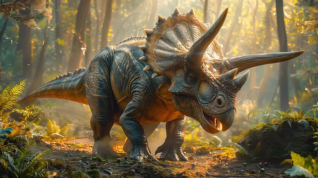
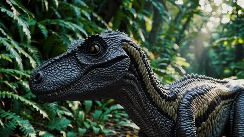

Dinosaurs & Fossils
Wonders of Prehistoric Life
Home
Dinosaurs
Fossils
Learn More
Dinosaurs Gallery
Tyrannosaurus Rex
Late Cretaceous period
Carnivorous predator
Length: Up to 40 feet
Massive jaws, 60+ sharp teeth

Triceratops
Late Cretaceous period
Herbivore with three facial horns
Over 30 feet long
Enormous skull, large frill

Velociraptor
Late Cretaceous period
Small, fast, agile predator
Sickle-shaped claws
Fossils mostly from Mongolia
Brachiosaurus
Late Jurassic period
Herbivore, long-necked
Stood up to 45 feet tall
Fed on high vegetation
Ankylosaurus
Late Cretaceous period
Armored body, club-like tail
20 feet long, defensive nature
Protection against predators
Stegosaurus
Late Jurassic period
Herbivore with bony plates
Spiked tail for defense
Over 30 feet long
Spinosaurus
Cretaceous period
Carnivore, semi-aquatic
Largest predatory dinosaur
Sail-like structure on back
Pachycephalosaurus
Late Cretaceous period
Herbivore, thick skull
Possible head-butting behavior
Medium size dinosaur
Deinocheirus
Late Cretaceous period
Omnivore, large claws
Long arms, humped back
Up to 11 meters long
Allosaurus
Late Jurassic period
Powerful carnivorous predator
Length: Up to 28 feet
Sharp teeth and strong claws
Diplodocus
Late Jurassic period
Herbivore with extremely long neck and tail
Up to 90 feet long
Used tail like a whip for defense
Parasaurolophus
Late Cretaceous period
Herbivorous duck-billed dinosaur
Distinctive curved cranial crest
Used crest to produce sounds
Carnotaurus
Late Cretaceous period
Carnivore with bull-like horns
Extremely short arms
Fast runner, up to 25 feet long
Iguanodon
Early Cretaceous period
Herbivore with distinctive thumb spike
Could walk on two or four legs
Up to 33 feet long
Pteranodon
Late Cretaceous period
Flying reptile (pterosaur, not dinosaur)
Wingspan up to 23 feet
Large head crest, fish eater
Archaeopteryx
Late Jurassic period
Transitional species between dinosaurs and birds
Had feathers and wings
Size of a raven, could fly
Compsognathus
Late Jurassic period
One of the smallest known dinosaurs
Carnivore, chicken-sized
Fast and agile hunter
Mosasaurus
Late Cretaceous period
Marine reptile (not dinosaur)
Up to 50 feet long
Apex predator of ancient oceans
Gallimimus
Late Cretaceous period
Omnivore, ostrich-like dinosaur
One of the fastest dinosaurs
Up to 20 feet long
Therizinosaurus
Late Cretaceous period
Herbivore with massive claws
Claws up to 3 feet long
One of the strangest dinosaurs
Dilophosaurus
Early Jurassic period
Carnivorous predator
Double crests on head
About 20 feet long
Oviraptor
Late Cretaceous period
Omnivore with parrot-like beak
Name means "egg thief"
Had crest on head
Ceratosaurus
Late Jurassic period
Carnivorous predator
Horn on snout, smaller horns over eyes
Up to 20 feet long
Kentrosaurus
Late Jurassic period
Herbivore related to Stegosaurus
Double row of spikes and plates
15 feet long, heavily armored
Giganotosaurus
Mid Cretaceous period
One of the largest carnivores
Larger than T-Rex, up to 43 feet
Pack hunter from South America
Argentinosaurus
Mid Cretaceous period
One of the largest land animals ever
Up to 100 feet long, 100 tons
Massive herbivorous sauropod
Microraptor
Early Cretaceous period
Small feathered dinosaur
Four wings (on arms and legs)
Could glide between trees
Styracosaurus
Late Cretaceous period
Herbivore with impressive frill
Long spikes on neck frill
Single nose horn, up to 18 feet
Majungasaurus
Late Cretaceous period
Carnivore from Madagascar
Evidence of cannibalism
Short arms, about 20 feet long
Dracorex
Late Cretaceous period
Herbivore with dragon-like appearance
Spiky skull, flat top
Name means "Dragon King"
Carcharodontosaurus
Mid Cretaceous period
Massive carnivore from Africa
Shark-like teeth, up to 43 feet
Rival to Spinosaurus
Quetzalcoatlus
Late Cretaceous period
Largest known flying animal
Wingspan up to 36 feet
Tall as a giraffe when standing
Protoceratops
Late Cretaceous period
Small herbivore with beak and frill
About 6 feet long
Abundant fossils found in Mongolia
Utahraptor
Early Cretaceous period
Largest known raptor species
Up to 23 feet long, 1000 pounds
Giant sickle claw on each foot